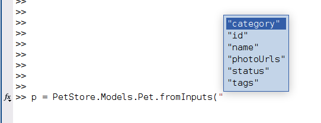
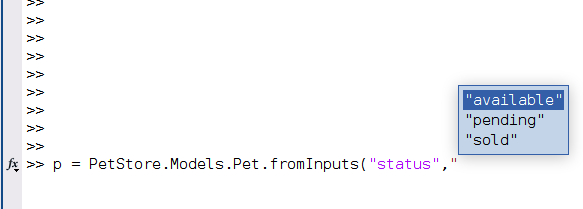
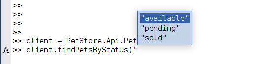

Basic Usage
The examples below are based on the Pet Store v3 OpenAPI example which can for example be run in a Docker container:
docker run -d -e OPENAPI_BASE_PATH=/v3 -e DISABLE_OAUTH=1 -p 8080:8080 openapitools/openapi-petstore
This will run the Pet Store example on http://localhost:8080, open this URL in a web browser to see the SwaggerUI for the example.
Note
For simplicity OAuth is disabled in this example using environment variable DISABLE_OAUTH=1. In this case the OpenAPI spec of the example does still contain the OAUth definition and the appropriate requestAuth and getOAuthToken methods will be generated in BaseClient but the token is not actually verified when calling the secured endpoints.
The MATLAB client code for this example can then be generated by running the following from a shell in the Software directory:
npx @openapitools/openapi-generator-cli --custom-generator Java/target/MATLAB-openapi-generator-3.0.0.jar generate -g matlab-client -i http://localhost:8080/openapi.json -o PetClient --package-name PetStore
If not working in the package’s Software directory, use full paths and add the following additional arguments:
-t "<package_directory>/Software/Mustache" --additional-properties openapiRoot="<package_directory>/Software/MATLAB
Or by using the following commands in MATLAB:
c = openapi.build.Client(inputSpec="http://localhost:8080/openapi.json", packageName="PetStore", output="PetClient");
c.build
See BuildClient.md for further details on using the MATLAB based build process.
The example below assumes that the generated package is called PetStore as was also set in the commands above. Add the directory in which the package was generated (PetClient in the examples above) to the MATLAB path (e.g. using addpath).
Hint
The generator is designed to generate classes with proper help comments. Do use the help function to learn more about the generated api and model classes, and their properties and methods.
API Classes
The generator generates classes for all of the APIs in the spec. The classes are generated in a sub package named api. The API objects are used to interact with the service and hold various configuration options for interacting with the service. All API classes have the following properties:
- serverUri:
Base URI to use when calling the API. Allows using a different server than specified in the original API spec.
- httpOptions:
HTTPOptions used by all requests. This for example allows configuring whether- and which proxy to use for requests. Or to configure trusted HTTPS certificates and root CAs.
- preferredAuthMethod:
If operation supports multiple authentication methods, specified which method to prefer.
- bearerToken:
If Bearer token authentication is used, the token can be supplied here. Note the token is only used if operations are called for which the API explicitly specified that Bearer authentication is supported. If this has not been specified in the spec but most operations do require Bearer authentication, consider adding the relevant header to all requests in the preSend method.
- apiKey:
If API key authentication is used, the key can be supplied here. Note the key is only used if operations are called for which the API explicitly specified that API key authentication is supported. If this has not been specified in the spec but most operations do require API key authentication, consider adding the API key to all requests in the preSend method.
- httpCredentials:
If Basic or Digest authentication is supported username/password credentials can be supplied here as matlab.net.http.Credentials. Note these are only actively used if operations are called for which the API spec has specified they require Basic authentication. If this has not been specified in the spec but most operations do require Basic authentication, consider setting the Credentials property in the httpOptions rather than through httpCredentials.
- cookies:
Cookie jar. The cookie jar is shared across all API classes in the same package. All responses are automatically parsed for Set-Cookie headers and cookies are automatically added to the jar. Similarly cookies are added to outgoing requests if there are matching cookies in the jar for the given request. Cookies can also be added manually by calling the setCookies method on the cookies property. The cookie jar is also saved to disk (cookies.mat in the same directory as BaseClient) and reloaded in new MATLAB sessions.
These properties can be set as any normal MATLAB object property:
c = PetStore.api.Pet;
c.bearerToken = "3244<MY-REDACTED-TOKEN>53abef";
But they can also be set when instantiating the object using Name-Value pairs where the Name matches the property name, e.g.:
c = PetStore.api.Pet("bearerToken", "3244<MY-REDACTED-TOKEN>53abef", "apiKey", "myapikey");
or:
c = PetStore.api.Pet(bearerToken="3244<MY-REDACTED-TOKEN>53abef", apiKey="myapikey");
Set properties using a configuration file
These properties are rarely changed when working with a given API. To aid configuration they can be loaded from a simple JSON file rather than being explicitly set in code. This also permits an end user to change the properties without needing to alter or understand the code. Configuration files can be used to quickly switch between different servers or credentials for example.
If a configuration file named <PackageName>.Client.Settings.json is found on the MATLAB path, it is loaded automatically when instantiating the client objects. To load a file with different name, use the "configFile" Name-Value pair when instantiating the object:
c = PetStore.api.Client("configFile","/home/username/myconfigfile.json");
This will search for the specified file on the MATLAB path if not specifying an absolute path.
Any additional options specified after the "configFile" argument, or when a <PackageName>.Client.Settings.json exists, allow overriding values from the configuration file. For example, suppose that the following PetStore.Client.Settings.json exists:
{
"serverUri": "http://localhost/v2",
"apiKey": "myKey"
}
and then the following is used:
c = PetStore.api.Client("serverUri", "http://example.com/api/v2");
Then the client is instantiated with the apiKey from the configuration file but the serverUri is set to "http://example.com/api/v2" as specified in the code.
Calling API Operations
Operation calls are made by making method calls on API Object instances e.g. Pet, Store & User. If the operation has any required parameters according to its OpenAPI spec, the generated MATLAB method will have the same arguments as required positional input arguments. Any optional parameters are specified through Name-Value pairs.
To learn more about the exact arguments a methods requires and/or supports, use the help function in MATLAB:
>> c = PetStore.api.Pet;
>> help c.findPetsByTags
--- help for PetStore.api.Pet/findPetsByTags ---
findPetsByTags Finds Pets by tags
Multiple tags can be provided with comma separated strings. Use tag1, tag2, tag3 for testing.
Required parameters:
tags - Tags to filter by, Type: array
No optional parameters
Responses:
200: successful operation
400: Invalid tag value
Returns: Array of Pet
See Also: PetStore.models.Pet
All methods always have three outputs:
The HTTP StatusCode of the API call.
The response body:
a. Decoded into the correct model, if the call was successful and returned an expected StatusCode according to the spec, or
b. As raw string, if there was a body but it could not be decoded (for example, if a StatusCode was returned which was not specified in the spec), or
c. Empty, if there is no response body at all.
The full response of the API call as
matlab.net.http.ResponseMessage.
So the method mentioned above can then for example be called using:
>> [status, response] = c.findPetsByTags(["tag1","tag2"])
status =
StatusCode enumeration
OK
response =
1x6 Pet array with properties:
id
category
name
photoUrls
tags
status
Or the updatePetWithForm method:
>> help c.updatePetWithForm
updatePetWithForm Updates a pet in the store with form data
No description provided
Required parameters:
petId - ID of pet that needs to be updated, Type: int64, Format: int64
Optional name-value parameters:
name - Updated name of the pet, Type: string
status - Updated status of the pet, Type: string
Responses:
405: Invalid input
Returns:
Which has petId as required input and name and status as optional inputs, could be called as:
% Theoretically allowed, with only required ID, not very useful though as you do
% not actually update any field for the specified pet then
[status,response] = c.updatePetWithForm(3)
% Or, more useful, with required ID and optional name
[status,response] = c.updatePetWithForm(3,"name","New Name")
% Or, with required ID and optional status
[status,response] = c.updatePetWithForm(3,"status","sold")
% Or, with require ID and both optional values
[status,response] = c.updatePetWithForm(3,"name","New Name","status","available")
Models
Models are objects that are used to define data structures, e.g. Address, Pet, Category. Models are generated in a sub package called models. They may be nested. In some cases they may be returned by operations (e.g. the example above returned a 1×6 array of PetStore.models.Pet), in some cases operations may require a model as input. When a model is required as input, some of the properties must be set, some may be optional and some may be ignored by a specific operation, for example:
>> help c.addPet
--- help for PetStore.api.Pet/addPet ---
addPet Add a new pet to the store
No description provided
Required parameters:
Pet - Pet object that needs to be added to the store, Type: Pet
Required properties in the model for this call:
name
photoUrls
Optional properties in the model for this call:
id
category
tags
status
No optional parameters
Responses:
405: Invalid input
Returns:
I.e. in the example above, a Pet model must be provided as input, but only its name and photoUrls fields have to be set.
Note
If the API spec uses oneOf,anyOf or allOf combinations of models for inputs, the generator will not be able to properly determine which fields may be required or optional, in that case no required and no optional parameters are listed at all. It is then entirely up to the end-user to supply a correct model instance with the correct fields set. There will be no error checking on the MATLAB side and all fields which have a value are included in the request.
In MATLAB to create a model instance, simply instantiate an object of the right class:
p = PetStore.models.Pet;
And then set the properties to the desired values, for example:
p.name = "Bo"
p.photoUrls = ["http://example.com/cat.png"]
Models can also be nested, in the example above the category and tags properties are of type Category and array of Tag respectively. The easiest way to fill out such properties is to work with subscripted assignment. I.e. the following does not work:
>> p = PetStore.models.Pet;
>> p.tags.name = "cats"
Property assignment is not allowed when the object is empty. Use subscripted assignment to create an array element.
But as the error message also indicates “subscripted assignment” can be used to create the element and then also immediately assign a value. I.e. the following will work:
>> p = PetStore.models.Pet;
>> p.tags(1).name = "tag1"
>> p.tags(1).id = 42;
And for properties which are arrays, like tags, this can also be used to add additional elements:
>> p = PetStore.models.Pet;
>> p.tags(2).name = "tag2"
>> p.tags(2).id = 123;
Alternatively it is of course also possible to first create an instance of a particular model and then assign it to the property:
p = PetStore.models.Pet;
category = PetStore.models.Category;
category.name = "cats";
category.id = 2;
p.category = category;
Model constructors
All models are generated with a constructor which:
Can deserialize a JSON string into a model instance, and
Allows setting property values by providing Name-Value pairs as input.
For example, the following one-liner with Name-Value pairs can be used to immediately create a Pet instance with specified name and photoUrls instead of needing three lines for this:
p = PetStore.models.Pet("name","Bo","photoUrls",["http://example.com/cat.png"])
Or with a JSON string:
p = PetStore.models.Pet('{"name":"Bo","photoUrls":["http://example.com/cat.png"]}')
And this can also be used in a nested way:
p = PetStore.models.Pet( ...
"name","Bo", ...
"photoUrls",["http://example.com/cat.png"], ...
"category",PetStore.models.Category("id",2,"name","cats"));
Note that first JSON strings are deserialized and then the Name-Value pairs are applied, so a Name-Value pair can override a property from the JSON string, for example in:
p = PetStore.models.Pet('{"name": "Foo"}',"name","Bar");
The final Pet instance will have name = "Bar" and not "Foo".
Model inheritance
In the example discussed on this documentation page, there is no inheritance between models and there is no polymorphism in the operations. These feature may be used in more complex services though and this will influence model behavior. If working with such services/specs, see Inheritance and Polymorphism for more information.
Example method call with model as input
So finally to call the addPet operation with a Pet as input:
% Create the client with which the operation can be called
client = PetStore.api.Pet;
% Create the Pet model for the Pet which is to be added
petToAdd = PetStore.models.Pet( ...
"name","Bo", ...
"photoUrls",["http://example.com/cat.png"], ...
"category",PetStore.models.Category('{"id":2,"name":"cats"}'));
% Call the method
status = client.addPet(petToAdd)
Enumeration handling
For enumeration model properties, MATLAB enumerations are generated. These are also part of the models sub package. For example in the Pet model, the status property is of type PetStore.models.PetStatusEnum. As always in MATLAB, enums can be set using actual enum instances:
p = PetStore.models.Pet;
p.status = PetStore.models.PetStatusEnum.available;
or using their string equivalent:
p.status = "available";
And this can also be used in a constructor again:
p = PetStore.models.Pet("status",PetStore.models.PetStatusEnum.available);
% Or
p = PetStore.models.Pet("status","available");
This fully integrates with MATLAB Tab completion. Typing p = PetStore.models.Pet( and then hitting [Tab] should show all properties:

And after choosing an enumeration property hitting [Tab] again should show the available enumerations:

For enumerations which are direct inputs to an operation and which are not part of an model, the generator does not generate actual MATLAB enums but it does generate input argument validation using {mustBeMember} which also offers tab completion, for example for the getPetsByStatus operation:
